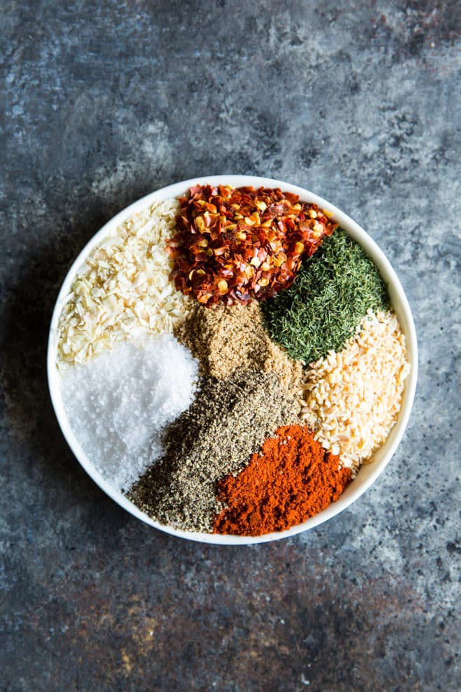
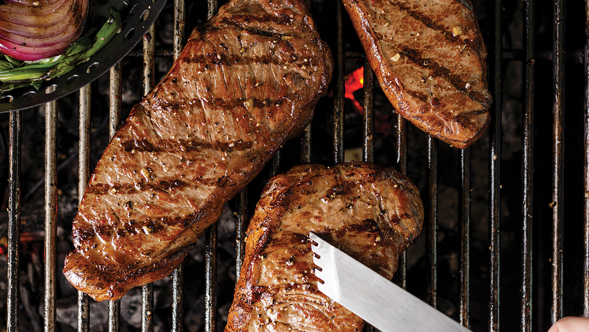

Learning how to grill the perfect steak is less intimidating than you think. Of course, it's all about hitting that sweet spot of gorgeous exterior char with perfectly cooked tender, juicy middle. But never fear—that balancing act is easy to achieve with a few simple strategies. Follow this guide, and you'll be ready to enjoy countless carnivorous feasts all year long.
Select Your Steak

Ribeye
This is a flavorful, extremely well-marbled cut of meat comes from the middle of the cow, in the rib section. Because of its high fat content, ribeye is extra flavorful and beefy.

T-Bone
The t-shaped bone that gives this steak its name joins two types of steak:tenderloin and richer and strip steak. When you grill T-bone, you'll want to make sure that the tenderloin (the less-marbled side) is positioned further away from the direct heat source and the strip side closer to the heat, because the tenderloin will cook more quickly.

Strip Steak
Also called New York Strip, this tender, somewhat chewy cut comes from the rear of the cow, just behind the ribs. Its beefy flavor isn't as pronounced as the ribeye, but it's still well marbled and doesn't need to be trimmed as much.
Season Your Steak
Fire Up the Grill
Recipie
For steak that's 1 1/2 inches thick or more, the best strategy to ensure meat that's perfectly charred on the outside and cooked to desired doneness in the middle is the reverse sear. You'll cook the steak until it's almost at the desired doneness over indirect heat, then move it over the hotter direct-heat section of the grill for a final quick sear.
First, make sure the indirect-heat section of the grill is around 225°F (use a grill thermometer with a clip to check), add the steak to that cooler part of the grill, and then cover the grill. “When the lid is down, hot air circulates around it, and you can gently warm the meat so that from top to bottom, it’s the same temperature and color,” Goldwyn said. You're basically creating an oven for your meat.
Start checking the temperature of the steak after about 15 minutes (the meat will look tan, not browned), and continue checking every 5 minutes, until the internal temperature of the steak is 10-15 degrees below your target temperature (about 120°F for a medium-rare 1 1/2 inch steak). Once the food hits that temperature, it’s ready to move to the direct-heat side for a quick sear.
Next, you want to crank up the heat. Remove the steak to a plate and set aside. For a gas grill, close the lid and turn all the burners to high heat for a few minutes. For a charcoal grill, gather the lit coals into a pile or add half a chimney's worth of fresh lit coals to concentrate the heat.
Move the steak to the direct-heat zone, flipping the steak every minute (as Goldwyn says, “like a human rotisserie”) to ensure that your meat browns evenly all the way around. Take the grilling food off of the grill once it hits your target temperature (see below). Let rest for 5 minutes before slicing and/or serving.
Hit the Desired Doneness Temperature The internal temperature of the meat will rise another 5 degrees as the meat rests, bringing it to the ideal final doneness you desire.